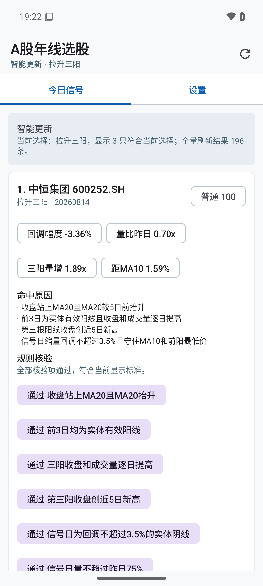
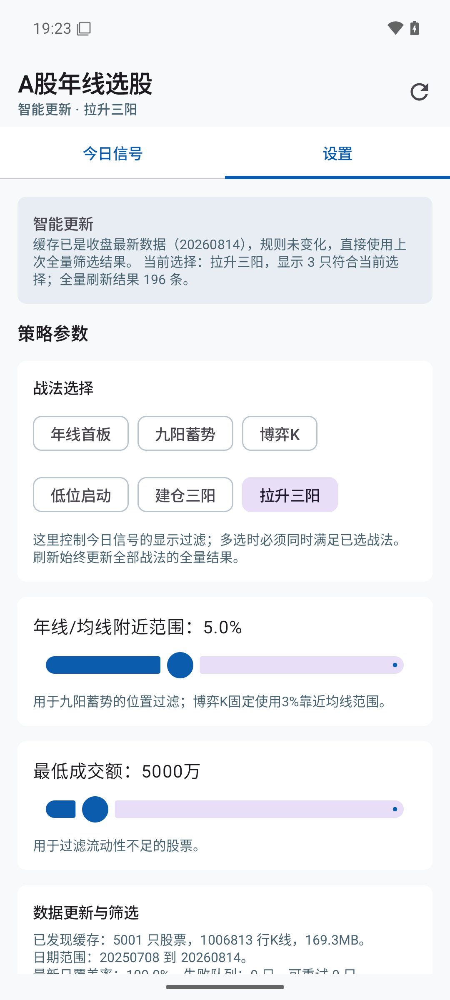
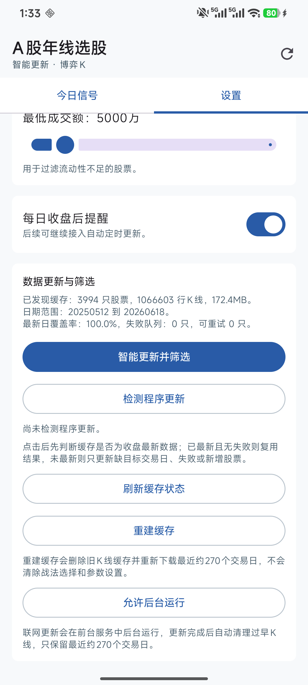

下载 APK
从 GitHub Releases 下载最新版安装包。
versionCode 24 · Android 8.0 及以上 · 仅发布正式签名 release APK。
从 GitHub Releases 下载最新版安装包。
手机提示未知来源时，允许用于下载 APK 的浏览器或文件管理器安装。
首次打开后点击“智能更新并筛选”，等待本地缓存完成。
在“今日信号”里查看命中股票、策略和规则核验。
在 Android 端联网读取 A 股列表和日 K 数据，合并到本地 SQLite 缓存，并自动清理过早数据。
支持年线首板、九阳蓄势、博弈K、低位启动等预设战法。
今日信号会持久保留；新入选股票置顶并显示“新”标识，方便复盘变化。
下方截图来自真实 Android 设备。股票结果只代表截图时的本地缓存筛选结果，不构成投资建议。


